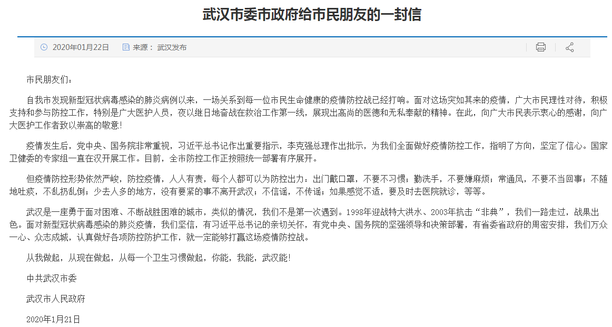
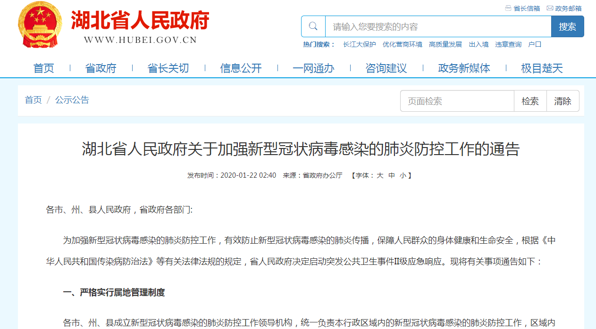

特别报道：“封城”前的武汉72小时
原文链接 备份链接 历史上，很多置人于死地的病毒并不是被人类消灭了，而是人类和它们分开居住了。 记者 | 吴洋洋 许冰清 刘娉婷 郑晶敏 郭苏妍 邓舒夏 数据资料整理 | 王一越 图表制作 | 程 星 确诊人数出现激增72小时之后，武汉 …
离汉通道关闭的前一天|图片报道
2020-01-23 07:22 作者：王迎春 来源：中国经营网
本报记者王迎春 武汉报道
1月22日，武汉首次披露肺炎疫情后第23天，湖北省、武汉市两级政府自21日起集中发布关于疫情防护工作动态，特别是在习近平主席做出指示、李克强总理于针对疫情召开国务院常务会议后。
1月23日清晨，武汉新型冠状病毒感染的肺炎疫情防控指挥部发布1号通告，自23日10时起，武汉停运全城公交、地铁、轮渡、长途客车，市民无特殊原因不离开武汉，机场、火车站离汉通道暂时关闭。
于是，1月22日，成为启动上述措施之前的最后一天。
记者从多个渠道了解到，湖北省、武汉市两级政府近两天以来的相关指示已迅速传递到乡村单位级政府系统。另外，全国多个单位已针对疫情向单位员工发布防护工作指导。武汉地铁集团已于22日晚间7点40分通过官方微信平台披露，自23日起武汉地铁启动进站体温检测。
1月22日，武汉市政府通过官网向市民发布公开信：

通过公开信，武汉市政府向市民提示防控措施：出门戴口罩，不要不习惯；勤洗手，不要嫌麻烦；常通风，不要不当回事；不随地吐痰，不乱扔乱倒；少去人多的地方，没有要紧的事不离开武汉；不信谣，不传谣；如果感觉不适，要及时去医院就诊等。
与此同时，湖北省政府于1月22日凌晨宣布启动公共卫生Ⅱ级应急响应，并发布相关通告：

此种状况下，记者走访武汉各大超市、市场，发现不少市民仍在外出购物采办年货。

图1：菜市场依然热闹，市民忙着备年货，商贩仍在做生意
不过商贩王先生对记者介绍，生意这两天已明显不好，人们甚至因为肺炎疫情不敢前来买活鸡。王先生原本趁过年多贩卖些土鸡。
从各大药店口罩销售情况看，市民戴口罩的意识在加强。一位在武汉长期居住的袁女士对记者介绍，已采购200个口罩。
相比于那些居住在武汉的人们，外地路过武汉、或回武汉探亲的人们显然更加紧张。生长于武汉，定居于深圳的胡女士于1月18日回武汉，了解到疫情进展后，果断决定不过年三十了，买了1月23日回深圳的返程票。生长于湖北宜昌定居于苏州的洪女士于1月21日回宜昌，她对记者介绍正在后悔中。喻女士此前已订好初三回武汉的机票，21日在得知疫情进展后，决定退票，“探亲重要，但两个孩子的生命安全更重要”她对本报记者介绍。
另外，一些单位对于有员工回武汉过年的，也显得紧张。郭先生于1月21日回武汉，当天他就接到领导电话提醒，向人力资源部报备。在深圳某银行工作的邵女士对记者介绍，单位已经发了口罩，并严格统计春节期间去湖北的人员，要求非特殊情况，不要去武汉，如果春节期间去了武汉的同事，也要求延后几天再上班。
值得注意的是，因为湖北省已启动突发公共卫生事件Ⅱ级应急响应，武汉卫健委宣布自22日起不再发布全市肺炎疫情动态，由湖北省卫生健康部门发布。
1月22日，记者通过多个票务平台查询发现，哪怕22日当天从北京、广州等热点地方前往武汉，仍有余票。
（编辑：郝成）
* 除《中国经营报》署名文章外，其他文章为作者独立观点，不代表中国经营网立场。
* 未经本网授权，任何单位及个人不得转载、摘编或以其它方式使用上述作品，违者将被追究法律责任。
* 凡本网注明“来源：中国经营网” 或“来源：中国经营报-中国经营网”的所有作品，版权均属于中国经营网（本网另有声明的除外）。
* 如因作品内容、版权和其它问题需要同本网联系的，请在30日内进行。
* 有关作品版权事宜请联系：010-88890046 邮箱：banquan@cbnet.com.cn
原文链接 备份链接 历史上，很多置人于死地的病毒并不是被人类消灭了，而是人类和它们分开居住了。 记者 | 吴洋洋 许冰清 刘娉婷 郑晶敏 郭苏妍 邓舒夏 数据资料整理 | 王一越 图表制作 | 程 星 确诊人数出现激增72小时之后，武汉 …
原文链接 备份链接 文 | 王彦入 王丹妮 程静之 殷盛琳 李晓芳 周航 叶雯 曾宪雯 编辑 | 王珊 陶若谷 33岁的刘科戴上两层口罩独自走进地铁，夹杂在路人中间。像他这样拉着行李箱的人并不少见，彼此间默契地保持着距离。三天前，他刚刚从 …
原文链接 备份链接 其他科室要尽量把医用口罩和防护服留给隔离病房的医护人员使用 2020年1月22日，在湖北省政府首场新型冠状病毒感染肺炎疫情防控工作新闻发布会上公布，新型冠状病毒感染的肺炎已致湖北17人死亡。图/新华 文 |《财经》 …
原文链接 备份链接 作者 | 第一财经 吴绵强 周芳 陈益刊 编辑 | 张富贵 为了遏制新型冠状病毒感染的肺炎扩散，按照武汉市新型冠状病毒感染的肺炎疫情防控指挥部通告，自1月23日10时起，武汉全市城市公交、地铁、轮渡、长途客运暂停运营； …
原文链接 备份链接 【财新网】（记者 覃建行）新型冠状病毒肺炎确诊病例激增后，武汉百步亭社区曾于此间举办“万家宴”的活动引发了争议。1月22日，财新记者走访当地，多位居民称此前政府对疫情评估不够，导致在传染性疫情趋重的情况下还举办如此大 …